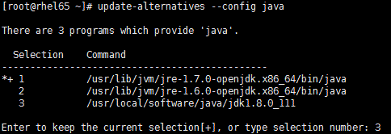

由于Kafka是用Scala语言开发的，运行在JVM上，因此在安装Kafka之前需要先安装JDK。
最新版本的Kafka需要运行在JDK 1.7以上，Kafka官方网站推荐使用JDK 1.8，因此本书所应用的JDK环境采用JDK 1.8。下面将详细介绍JDK 1.8安装步骤。
（1）下载并安装。首先在Oracle官方网站http://www.oracle.com/technetwork/java/javase/ downloads/jdk8-downloads-2133151.html下载JDK 1.8安装文件，根据操作系统类型选择相应的JDK版本。我使用的是64位操作系统，因此下载jdk-8u111-windows-x64.exe安装文件。下载完成后，双击运行安装。在安装时可以选择安装路径，这里在安装时全使用默认路径。
（2）环境变量配置。在系统变量中新增变量名JAVA_HOME，变量值为JDK 1.8安装路径。由于Java默认安装在Program Files目录下，这个目录名之间有空格，有可能在运行某些应用时因JDK安装路径有空格而报错。例如，我在安装JDK后，运行Kafka时报如下错误：
错误: 找不到或无法加载主类 Files\Java\jdk1.8.0_111\lib\dt.jar;C:\Program为了避免出现类似的错误，在Windows系统上，若JDK安装在Program File目录下，在设置JAVA_HOME时，用该目录别名PROGRA～1，因此将JAVA_HOME设置为C:\PROGRA～1\Java\jdk1.8.0_111。新增变量名CLASSPATH，变量值为.;% JAVA_HOME%\lib\dt.jar;% JAVA_HOME%\ lib\tools.jar。本步操作JDK环境变量配置如表2-1所示。
表2-1 JDK环境变量配置
|
变 量 类 型 |
变 量 名 |
变 量 值 |
|---|---|---|
|
系统变量 |
JAVA_HOME |
C:\PROGRA～1\Java\jdk1.8.0_111 |
|
用户变量 |
CLASSPATH |
.;% JAVA_HOME%\lib\dt.jar;%JAVA_HOME%\lib\tools.jar |
（3）验证。环境变量配置完成后，在Windows的cmd终端输入查看Java版本的命令，以此来验证JDK安装配置是否成功。命令如下：
Java –version若输出为以下JDK版本信息，则表示JDK 1.8已安装成功，且为系统默认JDK。
Java version "1.8.0_111"
Java(TM) SE Runtime Environment (build 1.8.0_111-b14)
Java HotSpot(TM) 64-Bit Server VM (build 25.111-b14, mixed mode)一些Linux的发行版默认已安装了JDK，如OpenJDK，这里所用的Linux操作系统默认已经安装了OpenJDK。输入下面的命令查看JDK版本信息：
Java –version输出JDK版本信息如下：
Java version "1.7.0_45"
OpenJDK Runtime Environment (rhel-2.4.3.3.el6-x86_64 u45-b15)
OpenJDK 64-Bit Server VM (build 24.45-b08, mixed mode)然而有些Linux系统并没有安装JDK，因此本小节将详细讲解如何在Linux中安装JDK。这里我们讲解JDK 1.8的安装。
（1）下载并安装。进入Oracle官方网站http://www.oracle.com/technetwork/Java/Javase/downloads/ jdk8-downloads-2133151.html下载Linux版本的JDK 1.8安装包。这里我们下载的安装包版本为jdk-8u111-linux-x64.gz，并将安装包解压到/usr/local/software/Java路径下。
tar -xzvf jdk-8u111-linux-x64.gz # 解压jdk安装包将安装包解压后，即完成JDK的安装。
（2）配置环境变量。在/etc/profile文件中添加JDK和JRE的路径，并添加到Path中，操作命令如下：
vi /etc/profile # 编辑profile文件在文件中添加以下内容：
export JAVA_HOME=/usr/local/software/Java/jdk1.8.0_111
export JRE_HOME=/usr/local/software/Java/jdk1.8.0_111/jre
export PATH=$PATH:$JAVA_HOME/bin:$JRE_HOME/bin保存退出。若系统默认安装了OpenJDK，则用户可以选择将其删除，也可以修改配置用最新安装的版本替换OpenJDK。这里选择用新安装的JDK替换系统自带的OpenJDK，则按序执行以下命令。
update-alternatives --install /usr/bin/Java Java /usr/local/software/Java/jdk1.8.0_111 300 update-alternatives --install /usr/bin/Javac Javac /usr/local/software/
Java/jdk1.8.0_111/bin/Javac 300 update-alternatives --config Java执行以上命令会出现JDK版本选择界面，如图2-1所示。这里我们选择新安装的JDK 1.8，即输入序号3，按回车键。

图2-1 Linux控制台展示的JDK版本选择命令行界面
环境变量配置好后执行以下命令，让刚才的修改操作立即生效：
source /etc/profile # 让对/etc/profile的修改立即生效（3）验证。输入查看JDK版本命令，查看环境变量配置是否成功，执行以下命令：
Java –version # 查看jdk版本输出以下JDK版本信息：
Java version "1.8.0_111"
Java(TM) SE Runtime Environment (build 1.8.0_111-b14)
Java HotSpot(TM) 64-Bit Server VM (build 25.111-b14, mixed mode)由以上JDK版本信息可知，JDK版本已替换为新安装的JDK 1.8版本。至此，JDK安装完成。
对Kafka集群本身来讲，配置SSH免密钥登录并不是必需的步骤，但作为分布式系统，一般会由多台机器构成。为了便于操作管理，如通过SSH方式启动集群代理等，这里对SSH安装配置进行介绍。
（1）在根目录下查看是否存在一个隐藏文件夹.ssh。若没有该文件夹，则在确保机器联网条件下执行以下命令安装ssh：
sudo apt-get install ssh # 安装ssh（2）进入.ssh目录，生成密钥对，执行命令如下：
ssh-keygen -t rsa # 产生密钥在执行以上命令时一路回车即可。ssh-keygen用于生成认证密钥，-t用来指定密钥类型，这里选择rsa密钥。执行完毕后会在～/.ssh目录下生成id_rsa和id_rsa.pub两个文件，其中id_rsa为私钥文件，id_rsa.pub为公钥文件。依次在集群其他机器上完成步骤1和步骤2。
（3）将id_rsa.pub文件内容追加到授权的key文件中，命令如下：
cat ~/.ssh/id_rsa.pub >> ~/.ssh/authorized_keys # 追加公钥到授权文件中若是单机环境，则至此已完成ssh配置。
（4）将第一台机器的authorized_keys文件复制到第二台机器上，并将第二台机器的公钥也追加到authorized_keys文件中，依次执行以下命令：
scp authorized_keys root@172.117.12.62:~/.ssh/ # 复制第一台机器的授权文件到第二台机器
cat ~/.ssh/id_rsa.pub >> ~/.ssh/authorized_keys # 在第二台机器上执行此命令，将第二台机器的公钥追加到授权文件中（5）将第二台机器的authorized_keys文件复制到第三台机器上，并将第三台机器的公钥追加到authorized_keys文件中，执行命令如下：
scp authorized_keys root@172.117.12.63:~/.ssh/ # 复制第二台机器的授权文件到第三台机器
cat ~/.ssh/id_rsa.pub >> ~/.ssh/authorized_keys # 在第三台机器上执行此命令，将第三台机器的公钥追加到授权文件中若集群还有更多机器，则依此类推完成授权文件合并。至此 ssh 配置完成，在已配置 ssh的任何一台机器上均可免密登录到其他机器。例如，在第一台机器上执行以下ssh命令，输出如下（首次登录会让输入密码）：
[root@rhel65 .ssh]# ssh 172.117.12.61
The authenticity of host '172.117.12.61 (172.117.12.61)' can't be established.
RSA key fingerprint is a3:5b:a9:29:ed:00:74:f4:ce:51:e5:7c:42:5b:8d:44.
Are you sure you want to continue connecting (yes/no)? yes
Warning: Permanently added '172.117.12.61' (RSA) to the list of known hosts.
root@172.117.12.61's password:
Last login: Wed Feb 8 17:30:11 2017 from server-1
[root@rhel65 ~]# ssh 172.117.12.61
Last login: Wed Feb 8 17:32:04 2017 from server-3
[root@rhel65 ~]# ssh 172.117.12.62
Last login: Wed Feb 8 17:26:09 2017 from server-1ZooKeeper是一个分布式应用程序协调服务框架，分布式应用程序可以基于ZooKeeper来实现同步服务、配置维护、命名服务等，ZooKeeper能提供基于类似于文件系统的目录节点树方式的数据存储，通过监控各节点数据状态的变化，达到基于数据的集群管理。ZooKeeper主要由表2-2所示的几个角色构成。
表2-2 ZooKeeper集群主要角色说明
|
角 色 |
描 述 |
|
|---|---|---|
|
Leader |
集群的领导者，负责投票的发起和决议及更新系统状态 |
|
|
Learner |
Follower |
跟随者，接受客户端的请求并返回结果给客户端，参与投票 |
|
Observer |
接受客户端的请求，将写的请求转发给Leader，不参与投票。Observer目的是扩展系统，提高读的速度 |
关于ZooKeeper的原理及其他相关知识，读者可查阅ZooKeeper官方网站（http://mirrors. cnnic.cn/apache/zookeeper/）及相关书籍进行深入了解。
Kafka依赖ZooKeeper，通过ZooKeeper来对代理、消费者上下线管理、集群、分区元数据管理等，因此ZooKeeper也是Kafka得以运行的基础环境之一。
进入ZooKeeper官方网站http://mirrors.cnnic.cn/apache/zookeeper/下载ZooKeeper（本书所用ZooKeeper版本为zookeeper-3.4.8），然后将下载文件解压到指定目录。对ZooKeeper的安装，下面按Windows和Linux分别进行讲解。
一般会选择在Linux操作系统上安装和部署分布式服务，因此这里并不打算讲解Windows环境下ZooKeeper集群环境搭建，只是简单介绍Windows环境下ZooKeeper单机模式的安装。
（1）解压安装。首先将ZooKeeper安装包zookeeper-3.4.8.tar.gz解压到相应目录，这里将ZooKeeper解压到D:\software\zookeeper-3.4.8目录下。然后进入ZooKeeper安装路径conf目录下，会看到ZooKeeper提供了一个zoo_sample.cfg的配置模板，将该文件重命名为zoo.cfg。zoo.cfg文件中只需修改dataDir和dataLogDir配置，其他配置使用默认值（其他配置及其含义将在下面的“Linux搭建ZooKeeper环境”小节详细介绍）。这里对dataDir和dataLogDir配置如下：
dataDir=F:\\zookeeper\\data
dataLogDir=F:\\zookeeper\\logs至此，Windows环境下ZooKeeper安装配置完成。下面进入ZooKeeper安装路径bin目录下，启动及验证ZooKeeper安装是否成功。
（2）验证。执行启动ZooKeeper命令：
zkServer.cmd # windows下启动ZooKeeper若输出没有任何错误，通过jps命令可以看到ZooKeeper相关进程。输入命令：
jps # 查看Java进程命令输出结果中至少包括以下进程名：
12008 QuorumPeerMain
11596 Jps还可以进入ZooKeeper的安装路径bin目录下，通过ZooKeeper客户端连接到ZooKeeper服务，执行以下命令进一步验证ZooKeeper是否安装成功：
zkCli.cmd -server 127.0.0.1:2181 # 登录到ZooKeeper服务器在输出信息中会看到“Welcome to ZooKeeper!”，同时显示接受命令输入界面。
在客户端输入：
ls / # 查看ZooKeeper服务器目录结构此时ZooKeeper服务器中仅有一个zookeeper节点，信息显示如下：
[zk: 127.0.0.1:2181(CONNECTED) 0] ls /
[zookeeper]至此，Windows环境下安装ZooKeeper讲解完毕。
在Linux环境下ZooKeeper单机模式配置与上一小节介绍的Windows环境下ZooKeeper安装配置的操作步骤基本相同，因此本小节直接介绍ZooKeeper分布式环境搭建。下面将讲解在Linux环境下如何配置由3台机器构成的ZooKeeper集群环境，这3台机器的IP地址分别为172.117.12.61、172.117.12.62和172.117.12.63。
（1）解压安装。首先在3台机器上分别将zookeeper-3.4.8.tar.gz解压到/usr/local/software/ zookeeper目录。进入解压后的zookeeper-3.4.8 /conf目录，将zoo.sample.cfg重命名为zoo.cfg。关于ZooKeeper配置文件中几个基础配置项的说明如表2-3所示。
表2-3 ZooKeeper基础配置说明
|
配 置 项 |
默 认 值 |
说 明 |
|---|---|---|
|
tickTime |
2000ms |
ZooKeeper中的一个时间单元。ZooKeeper中所有时间都以这个时间单元为基准，进行整数倍配置，默认是2 s |
|
initLimit |
10 |
Follower在启动过程中，会从Leader同步所有最新数据，确定自己能够对外服务的起始状态。当Follower在initLimt个tickTime还没有完成数据同步时，则Leader仍为Follower连接失败 |
|
syncLimit |
5 |
Leader与Follower之间通信请求和应答的时间长度。若Leader在syncLimit个tickTime还没有收到Follower应答，则认为该Leader已下线 |
|
dataDir |
/tmp/zookeeper |
存储快照文件的目录，默认情况下，事务日志也会存储在该目录上。由于事务日志的写性能直接影响ZooKeeper性能，因此建议同时配置参数dataLogDir |
|
dataLogDir |
/tmp/zookeeper |
事务日志输出目录 |
|
clientPort |
2181 |
ZooKeeper对外端口 |
请读者根据自已服务器环境，修改zoo.cfg文件中表2-3提及参数的配置。这里只修改了以下两个配置项，其他几个基础配置沿用默认值。
dataDir=/opt/data/zookeeper/data
dataLogDir=/opt/data/zookeeper/logs若是单机模式，操作至此完成。接下来配置将3台机器构成一个分布式集群。
（2）集群配置。首先在3台机器的/etc/hosts文件中加入3台机器的IP与机器域名映射，域名自定义，这里分别命名为server-1、server-2、server-3，3台机器IP与机器域名映射关系如下：
172.117.12.61 server-1
172.117.12.62 server-2
172.117.12.63 server-3然后进入其中一台机器的ZooKeeper安装路径conf目录。这里我们选择在IP为172.117.12.61的机器上进行配置，编辑conf/zoo.cfg文件，在该文件中添加以下配置：
server.1=server-1:2888:3888
server.2=server-2:2888:3888
server.3=server-3:2888:3888为了便于讲解以上配置，在这里抽象一个公式，即server.n=n-server-domain:port1:port2。这个公式中的n是一个数字类型常量，这里配置的1、2和3用于表示第几台ZooKeeper服务器；n-server-domain表示第n台ZooKeeper服务器的IP所映射的域名，当然这里也可以是第n台机器的IP；port1表示该服务器与集群中的Leader交换信息的端口，默认是2888；port2表示选举时服务器相互通信的端口。
接着在${dataDir}路径下创建一个myid文件。myid里存放的值就是服务器的编号，即对应上述公式中的n，在这里第一台机器myid存放的值为1。ZooKeeper在启动时会读取myid文件中的值与zoo.cfg文件中的配置信息进行比较，以确定是哪台服务器。
在zoo.cfg文件中我们同时配置了3台机器，因此接下来通过scp命令将本台机器的zoo.cfg文件复制到另外两台机器相应目录进行替换。
scp zoo.cfg root@172.117.12.62:/usr/local/software/zookeeper/zookeeper-3.4.8/conf/
scp zoo.cfg root@172.117.12.63:/usr/local/software/zookeeper/zookeeper-3.4.8/conf/然后分别修改另外两台机器的myid。同时，为了操作方便，我们将ZooKeeper相关环境变量添加到/etc/profile文件当中。
设置ZooKeeper安装路径，在/etc/profile相关环境变量配置中添加以下信息：
export ZOOKEEPER_HOME=/usr/local/software/zookeeper/zookeeper-3.4.8在该文件的Path配置项最后加上:$ZOOKEEPER_HOME/bin。注意，在$ZOOKEEPER_HOME前有一个冒号。然后执行source/etc/profile命令使所做的修改操作立即生效。其他两台机器也进行同样的环境设置。至此，由3台机器构成的分布式ZooKeeper环境搭建步骤介绍完毕。下面启动ZooKeeper进行验证。
（3）验证。由于配置了ZooKeeper环境变量，因此无需进入ZooKeeper安装路径bin目录下。在这3台机器上分别启动ZooKeeper：
zkServer.sh start # 启动ZooKeeper服务输出如下信息：
ZooKeeper JMX enabled by default
Using config: /usr/local/software/zookeeper/zookeeper-3.4.8/bin/../conf/zoo.cfg
Starting zookeeper ... STARTED查看这3台ZooKeeper服务器状态，依次在这3台机器上执行以下命令：
zkServer.sh status # 查询zookeeper状态执行上述启动命令，其中有两台机器输出以下信息：
ZooKeeper JMX enabled by default
Using config: /usr/local/software/zookeeper/zookeeper-3.4.8/bin/../conf/zoo.cfg
Mode: follower另外一台机器输出信息如下：
ZooKeeper JMX enabled by default
Using config: /usr/local/software/zookeeper/zookeeper-3.4.8/bin/../conf/zoo.cfg
Mode: leader可以看到，这3台机器中，一台机器作为Leader，其他两台服务器作为Follower。同时，可以查看zookeeper.out文件内容，通过启动日志进一步了解ZooKeeper运行过程。至此，ZooKeeper集群环境搭建讲解完毕。